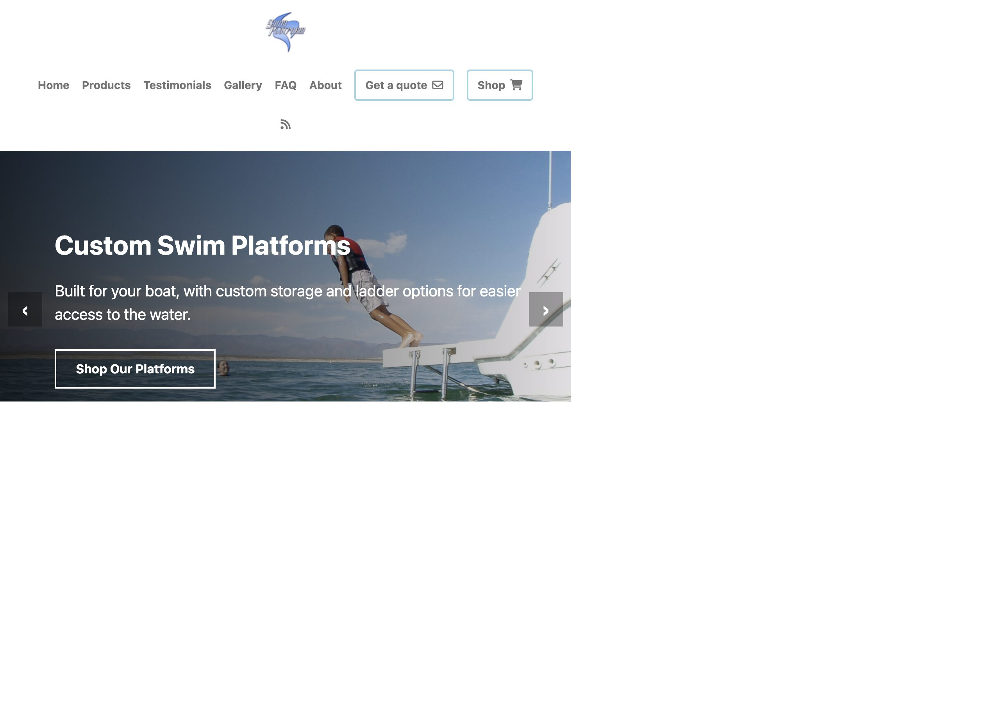
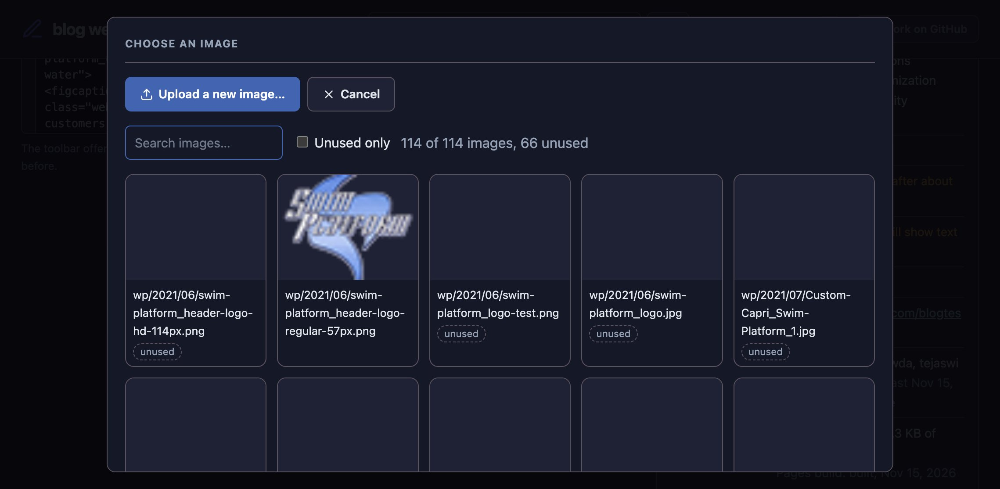
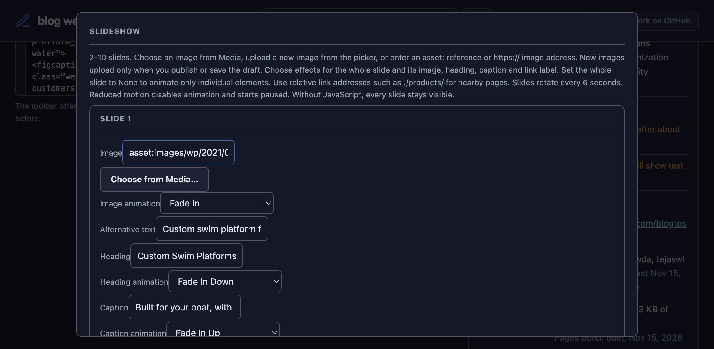

WordPress to blog webCLI / A worked migration
Move a WordPress site, then rebuild its look
Bring the pages across first. Keep the pictures. Repair the navigation. Then rebuild the design with settings, a slideshow, and a small theme recipe. This follows the Swim Platform migration into tejaswigowda/blogtest, using controls you can operate yourself. No AI required.
The route: source → import → media → links → slideshow → design → checks. Most work happens in the browser. The image-copying obstacle, and the optional command-line alternative, are called out rather than hidden.

1 Prepare a destination and a source
- Create a GitHub repository you can write to. Use your own repository for the exercise; the example repository is not a shared practice area.
- Open blog webCLI and sign in with GitHub. Give it access to that repository.
- Keep the original site open in a second tab. The reference here was swim-platform.com.
- If you administer WordPress, choose Tools → Export → All content and download the XML export. Also obtain a backup copy of
wp-content/uploadsfrom your host if possible.
The live-site importer can read a public WordPress REST API. It does not give you private content or drafts. An administrator's export is the better starting point when you need those too.
2 Import the content, not the theme
- Open Import from WordPress.
- Choose your XML export under Export files (.xml). Alternatively, enter the site's address under A live site's address and click Read site.
- If you have an uploads backup, select it under A copy of the old site's uploads folder (optional). Choose the folder containing the year folders, not one individual photograph.
- Click Review step by step. Check the title, author, description, and destination folder. For a single site at the repository root, leave the folder blank.
- Keep Import every picture and file in the media library checked if you want the whole library, including images not used in page bodies.
- Click Next: bring the pictures across, read the report, and then Next: choose where it goes. Name your destination repository.
- Review the pre-flight file list. Only click Commit and push when the repository and changes are correct.
In this migration, the live API reported 8 pages, 0 posts, and 78 media entries. Copying media involved 114 image files or variants, so the counts were not interchangeable. Your source may have changed since that run.
Expected result: editable Markdown pages and generated site files in the destination. Importing content does not reproduce a page builder, a WordPress plugin, or a commercial theme.
3 Finish copying the pictures
The browser could read the page content, but the original host refused cross-origin image downloads. That is a CORS restriction, not a bad GitHub token.
For the browser-only route:
- At the blocked-pictures screen, click Back to choose the uploads folder.
- Select the backup of
wp-content/uploads, keeping its directory structure intact. - Run the pictures step again. Review both copied-file counts and warnings before committing.
- If a specific image is still missing, obtain a permitted local copy and use the editor's image picker to upload and replace it.
What happened in the worked example: the initial browser import kept external images. A later, explicitly approved command-line media pass copied 114 image files, about 7.6 MB, and replaced 44 source references with repository-backed assets. That part was not accomplished by browser clicks.
Optional: import into a fresh local folder when you cannot use an uploads backup
With Node.js 20 or newer and this project checked out, the CLI importer is not subject to the browser's CORS restriction:
node cli/blog.js import wp https://swim-platform.com/ swim-platform-import --repo YOUR-USER/YOUR-REPOReplace the source with a site you may migrate and the destination with your repository. This writes a local blog; it is not a command to paste over an already edited destination or a media-only repair command. Inspect its output and compare changes before pushing. Use the migration guide for the broader workflow.
Check: open Media, find a copied image, and choose it in a page. An asset:images/... reference is resolved to the pinned asset when you save. Check the actual saved references too; do not rely only on thumbnails.
4 Review the eight pages
Open your repository in the editor and select Pages. For the supplied design recipe, keep these slugs:
| Page | Slug | What to check |
|---|---|---|
| Home | home | Product/build rows, three features, quote call to action |
| Products | products | Five images, accessories, four ordering steps |
| Testimonials | testimonials | Review text and its attribution stay together |
| Gallery | gallery | 35 images in four named model groups |
| FAQ | faq | Questions, answers, and category headings |
| About | about | Two photographs and the service/feature sections |
| Contact | contact | Introductory text; the form needs separate work |
| Request a Quote | request-a-quote | Instructions; the original form was not imported |
A page with the slug home also supplies the front page. Edit that page rather than creating a second copy for the root. The standalone /home/ address still exists.
Leave Menu position blank when you plan to use the explicit header links below. Otherwise, automatically generated menu entries can duplicate your custom navigation.
5 Make navigation work from both addresses
There are two different places to test: the /blog/ reader and the generated public site. A link can work in one and fail in the other.
- Open Settings → Header and footer.
- Enter header links as
Label | https://address, one per line. The header accepts up to eight links; the Feed link is added automatically. - Use your actual working public address. In the example, these navigation links used GitHub's HTTPS address, not an unverified HTTPS custom domain.
- Repeat for footer links. Open each destination and confirm it is a migrated page, not a page left on the original site.
Home | https://YOUR-USER.github.io/YOUR-REPO/
Products | https://YOUR-USER.github.io/YOUR-REPO/products/
Testimonials | https://YOUR-USER.github.io/YOUR-REPO/testimonials/
Gallery | https://YOUR-USER.github.io/YOUR-REPO/gallery/
FAQ | https://YOUR-USER.github.io/YOUR-REPO/faq/
About | https://YOUR-USER.github.io/YOUR-REPO/about/
Get a quote | https://YOUR-USER.github.io/YOUR-REPO/request-a-quote/
Shop | https://shop.swim-platform.com/The shop remains external in this example. Replace it with your own destination or omit it. The footer uses Products, Gallery, Testimonials, FAQ, About, Contact, and Request a quote.
Relative links: choose a base deliberately
For body links and slideshow links, ./products/ is useful when the document is at the site root. But at /YOUR-REPO/home/ it means /YOUR-REPO/home/products/, which is a different address.
The example slideshow therefore uses /blogtest/products/, /blogtest/testimonials/, and /blogtest/faq/. For another repository, replace /blogtest/ with its actual served prefix; for a custom domain serving the site at its root, that prefix may simply be /. Use ./ where the same document-relative destination is correct, not everywhere indiscriminately.
6 Build the three-slide hero
- Open Pages → Home. Put the insertion point before the first product image.
- Click the toolbar control titled Insert a slideshow. If a slideshow already exists, click Edit slideshow instead; do not add a duplicate.
- For each slide, click Choose from Media... and select an existing image. Search by its filename if necessary.
- For a new local picture, choose Upload a new image... inside the picker. It is staged until you publish or save the draft.
- Enter meaningful alternative text, a heading, caption, link label, and link address. Give both the label and address, or leave both empty.
- Use + Slide to make three slides. Use Move up and Move down to arrange them, then Apply.
| Heading | Image filename | Link label / destination slug |
|---|---|---|
| Custom Swim Platforms | swim-platform_custom-built-boat-platforms_hero-b.jpg | Shop Our Platforms / products |
| Customer Reviews | swim-platform_customer-reviews_hero-b.jpg | Testimonials / testimonials |
| FAQ's | swim-platform_faq-frequently-asked-questions_hero.jpg | See FAQ / faq |

Write short captions. A desktop hero has much more room than a phone. The example's first caption describes custom storage and ladder options; the other two introduce reviews and frequently asked questions.
7 Animate individual elements
In the slideshow dialog, use these dropdown values for each slide:
| Dropdown | Value | Effect |
|---|---|---|
| Animation | None | No whole-slide effect competing with its children |
| Image animation | Fade In | Photograph fades in |
| Heading animation | Fade In Down | Title enters from above |
| Caption animation | Fade In Up | Description enters from below |
| Link label animation | Fade In Up | Call to action enters with the caption |

The slideshow supports 2-10 slides and advances every six seconds. It pauses for interaction and respects reduced-motion preferences. Without JavaScript, the slides remain visible rather than disappearing. Check the published result, not only the editor's block preview.
8 Measure the design without copying its CSS
Open the old and new pages at the same viewport width. Compare the header height, full content width, individual columns, image aspect ratios, heading sizes, and whitespace. Do not copy the source's stylesheet or download its webfont files.
These are the values used for this rebuild:
| Setting or measurement | Value |
|---|---|
| Accent / text / background / muted | #21759b / #737373 / #ffffff / #ababab |
| Body and heading font choices | Sans; nearest system stack, not an exact Roboto webfont match |
| Body text | 16px |
| Desktop content | 1120px at a 1280px viewport |
| Two-column row | 550px + 20px gap + 550px |
| Desktop header / hero | 80px / about 591px |
| Phone hero | 406px at a 390px viewport |
For another source, you may inspect rendered values with your browser's developer tools. The project's optional node cli/measure.mjs https://YOUR-SITE/ command reports a starting palette, font category, and text width; it does not produce a complete design. See the measure, never extract rules.
9 Apply the recipe and choose the logo
- Before replacing an existing design, use Settings → Export theme (JSON) to keep a backup.
- Download this tutorial's theme recipe. In Settings, choose Import theme from JSON... and select that file.
- Inspect the import pre-flight before committing. The recipe includes the example's header/footer URLs and wording. It is a full look import, not a colors-only preset. If those demo destinations appear, commit the import only on your practice repository, then replace them in Settings before sharing the site.
- Set your own header/footer URLs and footer text. Follow step 5; do not leave navigation pointing at
tejaswigowda/blogtest. - Under Header and footer → Logo, enter the asset reference for your copied logo. The example uses
asset:images/wp/2021/06/swim-platform_header-logo-regular-57px.png. Use that only if it exists in your own imported library and you have permission to use it. - Uncheck Show the title next to the logo if the logo is sufficient. The theme export deliberately excludes logo images and link-image icons.
- Check Type and layout: content width
1120px, text size16px, body and heading fonts Sans. Check both light and dark color values if you want the same light site in either system mode. - Keep Link the stylesheet instead of putting it in every page enabled. Later CSS-only saves can update the shared stylesheet instead of regenerating every page.
What the recipe does: a full-width hero with overlay controls; paired product/build sections; centered feature icons; a product/accessory grid; a three-column desktop gallery; narrower FAQ text; testimonial columns; responsive stacking; and a dark, two-column footer with a simple original wave treatment.
For a different site, change the layout rather than forcing unrelated content into this recipe. Custom CSS accepts up to 16,000 characters, including whitespace. It rejects resource-loading rules, url(), font imports, and backslash escapes. Keep images in Media and use the font choices supplied by the app.
10 Use icons without losing button names
The recipe already includes blue feature icons, envelope/cart accents, an icon-only Feed link, and an icon-only Play/Pause toggle. Font Awesome is loaded by the current app through its pinned CDN stylesheet; no separate icon script is needed.
The playback icon follows the button's existing aria-label, so the picture changes with the actual playback state. Its text remains in the markup and the click target stays 44px square. The Feed link similarly keeps its accessible name.
If you want to understand or adapt the icon-only toggle in Custom CSS, this is the pattern used:
.webcli-slideshow .webcli-slide-controls button:nth-child(2) {
font-size: 0;
}
.webcli-slide-controls button[aria-label$="slideshow"]::after {
display: inline-block;
font: 900 16px/1 "Font Awesome 6 Free";
content: "" / "";
}
.webcli-slide-controls button[aria-label="Play slideshow"]::after {
content: "" / "";
}The two small glyphs in the code are literal Font Awesome characters, not \f04c or \f04b escape sequences. Those escapes are refused by Custom CSS. The downloaded recipe already contains the correct characters; do not paste a second copy of this block unless you are adapting another theme.
11 Publish and check the result
- For page edits, choose the intended status, click Publish (or Save draft), review the pre-flight, and click Commit and push.
- For settings edits, click Save settings..., inspect the file list, and commit. Wait for the success receipt; closing the pre-flight alone is not proof of success.
- Reload the reader and visit every page. Then visit the public site separately. Repository commits and hosting deployment are different events.
- If GitHub's branch-address cache is still showing an older look, open the reader with
&ref=COMMIT-SHAfrom the success receipt. That checks the saved revision without waiting for the branch cache.
This example used an existing legacy, branch-based Pages deployment. It did not require a GitHub Actions workflow. For an already served site, leave its working hosting configuration alone. For a new repository, configure its hosting separately after verifying the content.
Run the same checklist on desktop and a phone
- At 1280px, the hero spans the viewport and the main content is 1120px wide.
- At 390px, there is no sideways scrolling, text is readable, and the hero caption stays inside its image.
- Home works at both the root and its standalone page address.
- All header links, footer links, image links, and calls to action reach their intended destinations.
- All five Products images and all 35 Gallery images load. Scroll through the whole gallery; lazy-loaded images below the fold may not have loaded yet.
- Previous, Next, numbered dots, keyboard navigation, and Play/Pause still work after styling.
- Pause shows a pause icon; once paused, the button shows a play icon and its accessible name changes accordingly.
- Reduced motion starts the slideshow paused and suppresses the entrance animations.
- Refresh a saved page and reopen its slideshow dialog; images, links, and selected effects are still there.
- No supposedly copied picture still depends on the old host.
At the saved example revision, all eight pages were checked at desktop and mobile widths, all 35 Gallery images loaded, and the hero measured about 591px on desktop and 406px on a phone. These are checks on this example, not a guarantee about another import.
12 Finish what an importer cannot move
The result is a static rebuild, not WordPress running inside GitHub. The following differences remain important:
- Forms: the Contact and Request a Quote introductions were imported, but their original interactive forms were not. A sentence saying "use the form below" is not a working form. Before launch, replace it with an explicitly labeled link to your approved form service, or implement a supported replacement and test submissions. Raw HTML blocks do not accept forms or iframes.
- FAQ behavior: the answers remain readable content, not the original plugin's collapsible accordion.
- Typography: the system font is an approximation. The original site's Roboto files were not copied.
- Layout: the footer wave, mobile navigation, and testimonial columns are reconstructions, not pixel-identical copies of the original theme. Check review attributions after changing content or column widths.
- Commerce: an external Shop link does not migrate a store, checkout, inventory, or customer data.
- Media: missing files and externally linked pictures need explicit follow-up. Keep the source backup until those are resolved.
Once those checks pass, export your final theme from Settings as a backup. Keep the content repository, image references, and a record of the working public address. Change hosting or retire WordPress only when the replacement does what your visitors need.
Example, assets, and tools
The worked source is Swim Platform; its writing, photographs, and branding remain the property of their respective rights holders. The screenshots illustrate the migrated example, not a grant to reuse its assets.
The downloadable JSON was produced with blog webCLI's theme exporter from tejaswigowda/blogtest at a7a2e656. It includes the custom design and example navigation but excludes logo assets. It does not contain a copy of the source site's CSS.
Tools used in the workflow: the WordPress importer, Media picker, page editor, slideshow dialog, Settings, GitHub, and the optional local media/measurement tools. Animate.css supplies the animation effects; Font Awesome supplies the icons. No AI tool is needed to follow the steps.